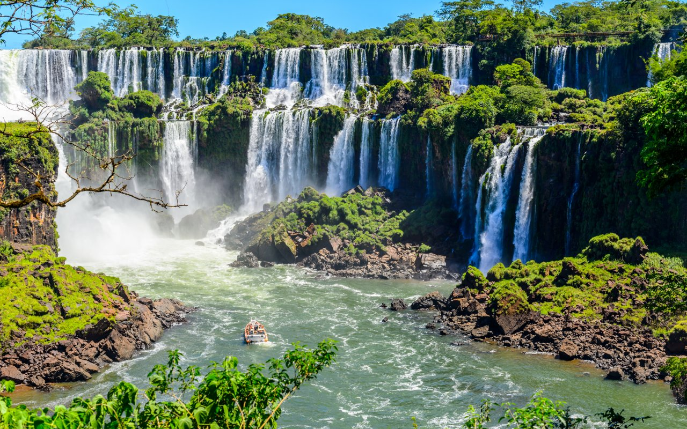
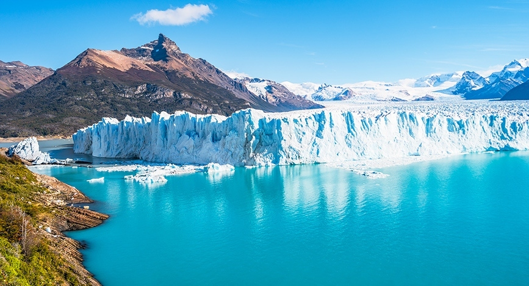
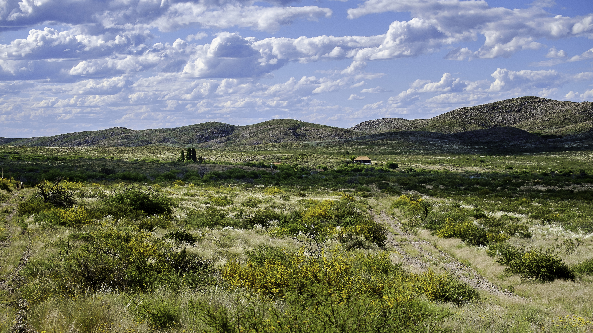

Les paysages
En Argentine, il y a beaucoup de paysages différents. Voici ceux que j'ai préférés.
Les chutes d'Iguazú
Ce sont de grandes cascades dans la forêt. L'eau fait beaucoup de bruit et on se mouille un peu !

La Patagonie
C'est tout au sud du pays. Il y a un gros glacier bleu, le Perito Moreno. C'est très beau.

Les Andes
Ce sont de grandes montagnes, à l'ouest. On peut y faire de belles randonnées.

La Pampa
C'est une grande plaine toute plate, avec des vaches et des chevaux.
